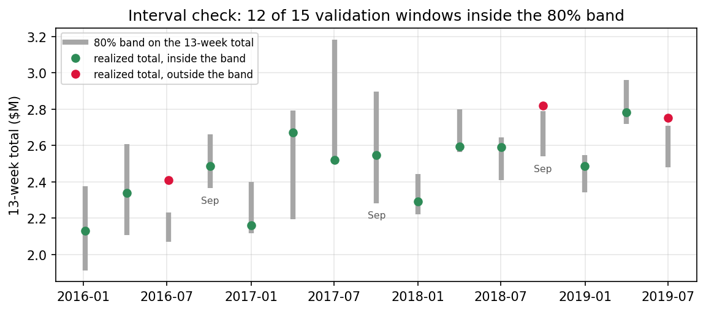

5.3 売上予測とシナリオ計画
日本語版について
このページは英語版 Marketing Science in Python のAI翻訳です。英語版を正本とし、差異がある場合は英語版を優先してください。コード、Notebook、画像内の文字は英語のままです。 英語版を読む
売上目標を達成できるでしょうか？
一つの問いに聞こえますが、計画チームには3つの答えが必要です。
- 現在の計画を続けた場合、売上はどこへ着地するか？
- 目標を達成する可能性はどの程度か？
- 測定済みのどの行動が、その確率をどれだけ変えられるか？
9月下旬です。この企業は12月下旬に終了する52週の会計年度で計画し、すでに39週間が過ぎました。残りは13週間で、このビジネスが年間売上の大きな割合を生む、ブラックフライデーからクリスマスまでの期間を含みます。
| 目標と売上の状況 | 値 |
|---|---|
| 現時点の売上（39週間） | $8.02M |
| 年初来の前年比 | +7.3% |
| 残り週数 | 13 |
| 前年実績 | $10.30M |
| 年間目標 | $11.12M |
| 目標の前年比 | +8.0% |
売上は+7.3%成長していますが、目標は+8.0%を求めています。近いものの、十分に近いでしょうか。答える前に、3つの用語を定義する必要があります。章全体がその区別にかかっているからです。目標は、ビジネスが選んだ固定の閾値です。ベースラインは、現在の計画がそのまま続く場合の残り週の予測です。通常どおりの事業運営として、履歴を形づくった繰り返しのプロモーション、価格、メディアが引き続き実施されます。増分は、追加のマーケティング施策がベースラインに上乗せするものです。この本のほかの部分にある因果手法から得るもので、予測自体から得ることは決してありません。シナリオ \(s\) の年末アウトカムは次のとおりです。
\[ Y^{(s)}_{\text{year-end}} = Y_{\text{so far}} + R_{\text{baseline}} + \Delta_s \]
現時点の売上に、残り週のベースライン予測と、シナリオが生む増分を加えます。

この系列は著者が生成したものです。実際の2014〜2019年のカレンダーに沿った、52週の会計年度6年分の週次Eコマース売上で、年によって強さが異なる祝日ピークと、真の大きさが分かっているキャンペーン効果を含みます。
付属Notebook： sec5.3_sales_forecasting.ipynb は、この章のすべての数値と図を再現します（2つの概念図は regenerate_sec5_3_figures.py から作成）。
GitHubで見る
ベースライン予測を構築する
売上が前年比7.3%増えているため、その成長率を前年合計へ掛け、予測と呼びたくなります。この近道が機能するのは、トレンドが続き、最終四半期が前年と同じ形になる場合だけです。祝日を含む四半期では、両方の仮定が崩れます。ピークが大きく、その規模は年によって異なるからです。また、四半期はピークで終わるわけではありません。配送締切を過ぎるとクリスマス週自体は大幅に下がり、年によって会計年度の第51週または第52週になります。

残り週を予測するモデルが必要です。2つのルールを最低基準とし、どのモデルもそれを上回る必要があります。
- ナイーブ。 最後に観測した週を繰り返します。まもなく始まる季節を構造的に把握できません。
- 季節ナイーブ。 前年の同じ会計週を繰り返します。「前年のパターンを適用する」を正直に実行したものです。
次に、まったく同じ過去の意思決定について、4つの候補を比較します。最初の候補には2つの版があります。
- ETS（指数平滑法）。水準、トレンド、季節性を明示的な要素とします。52週の季節項あり・なしの2版を使います。
- Prophet。変化するトレンド、年間の季節、カレンダー効果を別々の加法的な要素として当てはめます。多くの分析者が最初に開くツールなので比較へ入れますが、それ以上の理由はありません。
- ラグ特徴量へ適用するLightGBM。会計週、祝日・プロモーションカレンダーを入力します。調整した本番モデルではなく、固定した軽い正則化の比較対象として入れます。
- TimesFM 2.5。学習済みの基盤モデルをゼロショットで使います。当てはめは行わず、売上履歴だけを入力します。

from statsmodels.tsa.exponential_smoothing.ets import ETSModel
def fit_ets(train, seasonal=None):
model = ETSModel(
pd.Series(np.log(train)),
error="add", trend="add", damped_trend=True,
seasonal=seasonal, seasonal_periods=52 if seasonal else None,
)
return model.fit(disp=False)7本の経路はピークについて大きく異なり、このグラフだけではどれを信じるべきか分かりません。複雑なモデルに価値があるのは、ナイーブなベンチマークを明らかに上回る場合だけです。実務では、その基準は多くの人が考えるより高くなります。バックテストで勝った候補をベースラインとします。人気がある、新しいというだけではモデルを選べません。
結果の前に、2つの注意点があります。ProphetとLightGBMには事前に分かっている祝日・プロモーションカレンダーを与えます。TimesFMには売上履歴だけを与えます。何も加えていない系列の予測こそ、基盤モデルが実際に行うと主張することだからです。また、この系列は合成データで、季節ETSが当てはめるよう設計された52週サイクルで作られています。この表は、手法の順位ではなく、一つの系列に対する一つの正直な比較として読んでください。
どのライブラリを使うか？
| 手法 | ライブラリ | 最適な状況 | 注意点 |
|---|---|---|---|
| 季節ナイーブ | numpy または statsforecast |
常に、上回るべき最低基準として | 水準を更新できない |
| ETS | statsmodels（ここで使用）、statsforecast |
一つの系列、数百行 | 完全な季節サイクルが2回必要 |
| ARIMA | statsmodels、statsforecast |
自己相関、外生回帰変数 | 52週の季節の適合が遅い |
| Prophet | prophet（ここで使用） |
日次データ、祝日カレンダー | 区間に季節性の不確実性を含まない |
| 勾配ブースティング | lightgbm＋mlforecast（ここで使用） |
多数の系列、豊富な特徴量 | 一つの系列よりはるかに多くの行が必要 |
| 基盤モデル | timesfm（ここで使用）、chronos |
当てはめる履歴がない、または互いに無関係な多数の系列 | ダウンロードが大きく、最新の重みは非商用であることが多い |
数百行の週次データからなる一つの系列は、一般的な計画の状況です。通常、季節状態空間モデルとナイーブなベンチマークで対応できます。多数の系列と豊富な特徴量があれば、勾配ブースティングを使う価値があります。基盤モデルは当てはめがまったく不要であり、履歴のない新SKUに本当に役立つため、知っておく価値があります。ただしライセンスに注意してください。この章でTimesFM 2.5の重みを使うのは、より新しい3.0の重みが非商用利用に制限されているからです。どのライブラリを使っても、次の節の比較によって判断します。
起点をずらしたバックテストでベースラインを検証する
一般的な方法は、学習／テストを無作為に分割することです。このデータでは、LightGBMのWAPEは4.5%になります。しかし、この数値は2つの理由で誤解を招きます。第一に、シャッフルすると、予測対象より後の週を使ってモデルが学習でき、ラグ特徴量を使うと、テスト行の大半について隣接週が学習セットに入ります。第二に、無作為分割が評価するのは1行ずつの補間です。意思決定に必要な、固定した起点からの13週間の経路を生成することさえできません。報告される数値は、別の問いへ答えています。
実務で破られることの多い重要なルールは、すべてのモデルが予測起点で利用可能な情報だけを使うことです。評価に使う過去の予測も、すべて同じルールに従う必要があります。
起点をずらしたバックテストは、このルールを強制します。ここでは会計カレンダーにより、特にきれいに実行できます。毎年同じ52週の形を持つため、現在直面している意思決定、すなわち9月下旬から年末を予測するという問いを、2016、2017、2018会計年度の同じ時点で再現できます（2015会計年度には52週の季節を推定できるほど過去の履歴がありません）。同じ問いを正直に再現した3つの例が得られます。

HORIZON = 13
SEPT_ORIGINS = [143, 195, 247] # end of fiscal week 39, FY2016..FY2018
for origin in SEPT_ORIGINS:
train = y[:origin] # nothing after the origin, for any model
actual = y[origin:origin + HORIZON]
for name, forecast in fit_all_models(train, HORIZON).items():
score(name, origin, actual, forecast)モデルの比較には、2つの点指標で十分です。週次WAPEの \(\sum_t |y_t - \hat y_t| / \sum_t |y_t|\) は、計画担当者が理解できる誤差です。年末の問いは13週間合計の符号付き誤差に依存します。四半期の合計では、週次の外れが一部相殺されるからです。
| モデル | 週次WAPE | 13週間合計誤差 | バイアス |
|---|---|---|---|
| ナイーブ | 13.2% | 6.8% | -6.8% |
| 季節ナイーブ | 8.6% | 5.5% | -5.5% |
| ETS、水準＋トレンド | 13.3% | 4.7% | -4.7% |
| ETS、水準＋トレンド＋季節 | 7.4% | 2.6% | -1.3% |
| LightGBM、ラグ＋カレンダー | 12.3% | 5.7% | -5.7% |
| Prophet、カレンダー回帰変数 | 10.5% | 5.3% | +1.8% |
| TimesFM 2.5、ゼロショット | 10.8% | 2.6% | -1.5% |
季節性が四半期を左右し、季節ETSが両方の列で勝ちます。ただし、敗れた3つのモデルにも注目する価値があります。
TimesFMは意外な結果です。生の系列だけを与えたにもかかわらず、年末の問いが依存する13週間合計で季節ETSと並びます。週ごとでは3.4ポイント遅れています。当てはめもプロモーションカレンダーもなく、それでも四半期では競争力があります。
Prophetは期待外れであり、多くのチームなら導入していたモデルです。合計誤差5.3%で、前年パターンの繰り返しをわずかに改善するだけです。Prophetの年間季節性は365.25日のサイクルですが、このビジネスは固定52週の年で計画するため、当てはめたピークが重要なピークからずれるからです。数百行の一つの系列ではLightGBMは競争できません。無作為分割の4.5%に対して、起点をずらしたWAPEが12.3%になり、リーケージの教訓を数値で示します。
以後、季節ETSをベースラインとします。比較で勝ち、週ごとに一つの数値ではなく、完全な予測経路を生成する唯一の候補です。次の手順で、その経路が必要になります。
目標を達成する確率
ここで、バックテストによって検証した仕組みを実際の予測へ使います。9月下旬までの全データへ季節ETSを当てはめ、完全な13週間の経路を5,000本シミュレーションし、各経路の合計を現時点の売上$8.02Mへ加えます。
result = fit_ets(y[:LIVE_ORIGIN], seasonal="add")
paths = simulate_paths(result, h=13, repetitions=5000) # centered residual bootstrap
year_end = sales_so_far + paths.sum(axis=0) # one total per path
p10, p50, p90 = np.percentile(year_end, [10, 50, 90])
p_hit = (year_end >= target).mean()
年末予測の中央値は$10.91Mで、80%区間は$10.79Mから$11.05Mです。通常、プレゼンテーションに示されるのは中央値ですが、確約ではありません。確約として扱うと、計画にとって重要な不確実性を無視します。$11.12Mの目標はP90のすぐ上にあるため、現在の計画で達成する確率は4%です。不可能ではありませんが、明らかに可能性は低く、どの程度低いかを示す数値が得られました。
区間のキャリブレーションを確認する
4%という数値はシミュレーション分布から読み取ったため、意思決定の対象である13週間合計について、その分布自体も確認する必要があります。予測期間を通じて週次予測誤差には相関があり、分位数は足し算できません。そのため、モデルの週次分位数を積み重ねても合計の区間は作れません。コードで完全な経路をシミュレーションし、それぞれを合計するのはこのためです。
過去の起点で同じ手順を再現し、実績合計が80%帯の内側に入ったかを確認します。重複しない15個の13週間の窓では12回、名目上の80%に近い結果でした。9月を再現した3期間では2回入りました。

被覆率は分布の広がりを支持しますが、裾は支持しません。目標はP90の外にあり、15期間では4%のような小さな数値を保証できません。一桁台前半という答えの形を信頼し、4.0%ではなく「明らかに可能性が低い」と考えて計画します。
マーケティングシナリオには測定済みの増分が必要
ベースライン分布から、現在の計画がどこへ着地する可能性が高いかが分かりました。次に、どの会議でも「キャンペーンを追加すると答えは変わるか？」と尋ねられます。
前年の祝日プロモーション週は周辺の週を約22%上回ったため、追加キャンペーンに+22%と書き込みたくなります。この数値は3つの意味で間違っています。プロモーションは最も強い週に合わせて実施されるため、22%の一部は季節性です。ベースラインはすでに繰り返し行うプロモーションの平均効果を含むため、残りの大半も織り込み済みです。さらに残る部分は、プロモーションと、モデルが捉えられなかったほかのすべての要因の混合です。プロモーション変数は予測に役立ちますが、その係数は因果効果ではありません。予測は何が起きる可能性が高いかを示し、マーケティングによって何が起きたかを示すものではありません。
したがって、\(\Delta_s\) は予測の外部から得ます。増分をシミュレーションへ入れるには、2つが必要です。何に対する増分かを示す基準条件と、不確実性の分布です。
| シナリオ | 増分 | 数値の出所 |
|---|---|---|
| 現在の計画（ベースライン） | 0 | ベースライン予測 |
| 追加の祝日キャンペーン | キャンペーン4週間に+8%（SE 2.5ポイント） | 前年キャンペーンに対する地域実験（Section 6.3）または因果インパクト分析（Section 3.4） |
| 追加のメディア投資 | 四半期に+$60k（SE $25k） | キャリブレーション済みMMMの反応曲線（Section 6.2、Section 6.4） |
これらの増分は、実際の測定値に似せたプレースホルダーです。関連する章から各行を埋めるか、除外します。キャリブレーション済みMMMのようなベイズ的な情報源からは、事後分布のサンプルを直接得られます。
シナリオ分布を比較する
増分をシミュレーションへ入れるときは、単位が重要です。キャンペーン効果は相対値です。各経路自身のキャンペーン週売上へ掛けるため、祝日シーズンが強ければ、金額のリフトも比例して大きくなります。メディア効果は金額で得られ、そのまま加えます。
beta = rng.normal(0.08, 0.025, size=n_paths) # campaign lift per path
campaign_base = paths[CAMPAIGN_STEPS, :].sum(axis=0)
year_end_campaign = sales_so_far + paths.sum(axis=0) + beta * campaign_base
media = rng.normal(60_000, 25_000, size=n_paths) # dollars over the quarter
year_end_media = sales_so_far + paths.sum(axis=0) + media| シナリオ | P10 | P50 | P90 | P（目標達成） | 解釈 |
|---|---|---|---|---|---|
| 現在の計画（ベースライン） | $10.79M | $10.91M | $11.05M | 4% | 可能性は低い |
| 追加の祝日キャンペーン | $10.87M | $11.00M | $11.14M | 13% | 確率は改善するが、まだ低い |
| 追加のメディア投資 | $10.85M | $10.97M | $11.11M | 8% | 役立つが、単独では不十分 |

キャンペーンによって中央値は$10.91Mから$11.00Mへ、目標達成確率は4%から13%へ動きます。会議で出てくる2つの発言は、どちらも間違っています。「目標達成は不可能だ」：違います。キャンペーンシナリオでは目標が帯の内側に入ります。「キャンペーンを行えば目標達成の可能性が高い」：違います。13%は高い確率ではありません。この表は、点予測では決して示せない2つの事実を同時に示します。
目標から逆算する
同じシミュレーションで逆の問いへ答えます。四半期がベースライン中央値をどれだけ上回る必要があり、過去に同様のことが起きたことはあるか？
| 比較 | ベースライン四半期を上回るリフト |
|---|---|
| 目標達成に必要 | +7.2% |
| 9月起点で最大の上振れ | +6.0% |
| キャンペーン増分（中央値） | +3.0% |
| メディア増分（中央値） | +2.1% |
目標を達成するには、予測中央値を7.2%上回る必要があります。これを年初来成長率7.3%と混同してはいけません。後者はモデルではなく、前年に対して測定しています。9月を再現した3期間のどれも、中央値をそれほど上回りませんでした。最大の上振れは6.0%です。重複しない15の検証期間で、それより大きな外れは+11.9%だけでした。2016年半ばの2週間の落ち込み後の反発であり、一度限りのショックであって計画ではありません。2つの増分を組み合わせても約5%で、まだ不足します。
予測から意思決定へ
冒頭の3つの問いに数値がつきました。現在の計画では約$10.91M。目標達成確率は4%。測定済みの行動を行っても最大13%であり、組み合わせても四半期に対して数ポイントの隔たりが残ります。目標達成の可能性を高くするシナリオはありませんが、その隔たりは、1月の驚きとしてではなく、9月時点でチームが計画へ織り込める数値になりました。
各ツールは、式の中で自身が担当する項へ向けます。ベースラインは現在の計画を続けた場合に起きる可能性が高いことを示しますが、キャンペーンが何を引き起こすかは示せません。それは \(\Delta_s\) であり、実験（Section 3.2）、地域テスト（Section 6.3）、キャリブレーション済みMMM（Section 6.4）、弾力性曲線（Section 5.1）、因果インパクト分析（Section 3.4）などの因果的証拠が必要です。逆も同じです。厳密なリフト推定値から、次の四半期の合計を予測することはできません。
会議後にも予測帯の用途が一つあります。帯の外に着地した週は、調査すべきシグナルであり、ビジネスが変わった証明ではありません。
要点
- 各起点で利用可能な情報だけを使い、意思決定で使う予測期間とカレンダー上の時点でベースラインを検証する。無作為分割は別の問いへ答える。
- 点ではなく分布から判断する。予測期間全体の経路をシミュレーションすることで、予測中央値を目標達成確率4%へ変換する。これは正確な頻度ではなく、一桁台前半と読む。
- シナリオはベースラインと別に測定した増分の合計であり、それぞれに基準条件と不確実性がある。プロモーション週の売上は増分ではない。